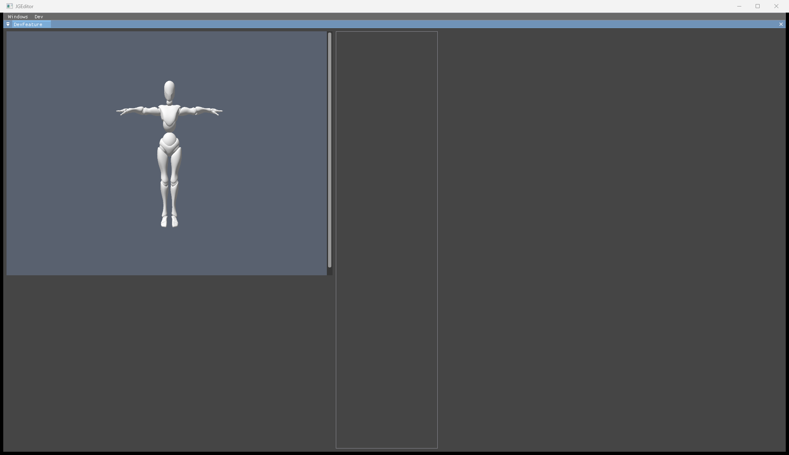

Graphics 진행 보고
요약. Graphics는 렌더링 기반을 끝내고 에셋 파이프라인 마무리 단계에 있습니다. 2025년에 한 번도 컴파일되지 않았던 코드를 09-16에 빌드 가능 상태로 되돌린 뒤, 첫 드로우 → 메시 드로우(G버퍼 + 합성) → 종료 크래시 제거 → CPU↔GPU 전송 관리자 → 2프레임 파이프라이닝 → 장면 데이터(PScene)와 렌더러(PSceneRenderer) 분리까지 09-29에 마쳤습니다. Phase 0~4는 31항목 전부, Phase 5는 31항목 중 16개 완료와 2개 부분 완료입니다. 진행 중인 코드 작업은 없고, Graphics 변경은 09-30 17:30 커밋 4c8ac73까지 모두 커밋됐습니다.
지금 필요한 것.
- 이 PC에서 첫 실행 확인. 저장소가
C:\Develop\JGEngine(새 PC)로 옮겨졌고, 이 PC에서는 Graphics를 한 번도 실행하지 않았습니다. 마지막 검증은 09-29 옛 PC입니다. 캡처 스크립트가 옛 경로를 하드코딩해 그대로는 실패합니다. 다른 트랙이 에셋 경로 코드를 고치는 중이라 그 변경이 들어간 뒤 한 번 돌리면 둘 다 확인됩니다. - 에셋 저장 형식 결정(5-30). 4MB 텍스처가 73.7MB 파일이 되는 문제입니다. 머터리얼 임포트와 임포트 명령이 이 결정 뒤에 있습니다.
- 출력 색 공간 결정(5-14). 지금은 0.5 회색이 실제보다 밝게 보입니다.
1. 단계별 진행
| 단계 | 한 일 | 상태 | 날짜 | 커밋 |
|---|---|---|---|---|
| Phase 0 준비 | 현재 상태를 커밋으로 고정, 빌드 오류 10건 목록 확보 | 완료 | 09-15~16 | bd98a67 04d9247 |
| Phase 1 빌드 복구 | 셰이더(도메인별 바이트코드)·머터리얼 재설계, 셰이더 컴파일러 버그 3건, 소스 27개 UTF-8 변환. 16/16 프로젝트 오류 0 | 완료 | 09-16 | 334052b c300fd3 |
| Phase 2 드로우 전 수정 | HLSL 템플릿·플레이스홀더 통일, 상수 버퍼 256B 정렬, 렌더 타깃·깊이, 기본 텍스처·머터리얼 | 완료 | 09-16 | 57189c7 |
| Phase 3 첫 드로우 | 화면 공간(Screen) 도메인 풀스크린 드로우 | 완료 | 09-16~17 | 60ccb48 |
| Phase 4 메시 드로우 | 에셋 메시와 렌더 메시 분리, G버퍼 4장 + 깊이 → 합성, 카메라, 메시 에셋 로드(에셋 DB 버그 5건 포함) | 완료 | 09-17 | 4e12fed 52920a4 |
| 종료 크래시 | API 캐시 수명 관리와 null 가드 21개, 모듈 역순 Shutdown. 종료 코드 0 | 완료 | 09-17 | cd1a1d6 |
| Phase 5 기반 강화 | 전송 관리자, PSO 캐시 키 수정(장시간 실행 크래시 원인), FBX 임베디드 텍스처 임포트, 2프레임 파이프라이닝, PScene 분리, 경계 상자 저장 | 진행 중 | 09-18~29 | a71b70a 033e988 d457b92 1308fd5 4c8ac73 |
Phase 5 31항목: 완료 16 · 부분 2(5-26 (1)~(3), 5-19 일부) · 남음 7 · 보류 5 · 제외 2. 진행률 80% = (31 + 16.75) ÷ (31 + 29), 보류 5개는 분모에 포함했습니다. 다른 트랙처럼 보류를 분모에서 빼면 약 87%입니다.
2. 지금 Graphics가 하는 것
| 영역 | 구현된 것 |
|---|---|
| 장면 | PScene이 메시·카메라를 ID로 생성·조회·수정·삭제합니다(데이터만 들고 메인 스레드 전용). 그리기는 PSceneRenderer::Render(scene, camera)가 맡습니다. GameFrameWorks가 쓸 API는 준비됐습니다. |
| 머터리얼 · 셰이더 | 도메인 2종(Surface, Screen), HLSL 템플릿 치환, FXC(셰이더 모델 5.1), 상수 버퍼 레이아웃, 텍스처 슬롯과 기본 텍스처 |
| 프레임 | 2프레임 겹침 실행, 프레임별 할당자·업로드 페이지·디스크립터 힙, 리소스 해제는 GPU가 그 프레임을 끝낸 뒤 |
| CPU↔GPU 전송 | PResourceStagingManager 한 곳에서 업로드와 리드백(비동기, 즉시)을 처리 |
| 에셋 · 임포트 | 정적 메시(경계 상자 저장), 텍스처, FBX → 메시 + 임베디드 텍스처 .jgasset. 머터리얼 임포트와 임포터를 부르는 진입점은 아직 없습니다. |
| 안정성 | 60초 실행에 PSO 2개로 고정, D3D12 디버그 메시지 0, 종료 코드 0, 종료 시 메모리 블록 0 (09-29 옛 PC 기준) |

3. 남은 일 (순서대로)
| 순서 | ID | 할 일 | 상태 |
|---|---|---|---|
| 0 | 회귀 | 이 PC에서 HEAD 바이너리로 60초 실행, 캡처, 리드백 PNG 비교 | 착수 가능 캡처는 스크립트 경로 수정이 먼저 |
| 1 | 5-30 | 에셋 저장 크기(4MB 텍스처 → 73.7MB, X Bot 36MB). 임포트 저장이 CPU → GPU → CPU로 도는 왕복 제거 | 결정 필요 |
| 2 | 5-29 | FBX 머터리얼 임포트 + sRGB 텍스처 포맷 + 밉 생성. 지금은 임포트한 텍스처를 참조하는 곳이 없습니다 | 착수 가능 sRGB 규칙은 5-14와 함께 |
| 3 | 5-31 | 임포트 진입점 asset.import 콘솔 명령. 지금 엔진에는 임포터를 부르는 코드가 없습니다 | 착수 가능 |
| 4 | 5-14 | 스왑체인 색 공간. FP16 출력을 OS가 선형으로 해석해 0.5가 밝게 보임 | 결정 필요 |
| 5 | 5-25 | 매 실행 저장하는 리드백 PNG를 devscene.readback 명령으로 | 결정 필요 PNG 확보 방법 |
| - | 5-19 | 헤더 툴이 메타 없는 열거자 이름을 빠뜨림. 모든 열거자에 메타를 붙여 우회 중 | 낮음 |
| - | 5-20 | 샘플 에셋 경로 "(null)" 경고. 재임포트나 재저장 때 함께 해결 | 낮음 |
GameFrameWorks가 카메라·메시 컴포넌트(2-1, 2-2)를 시작하면 렌더러 소유 위치와 활성 카메라 전달 방식에 대한 요청이 올 수 있습니다. Graphics 쪽 변경은 요청이 오면 합니다.
4. 결정이 필요한 항목
| # | 결정할 것 | 선택지 | 권고 | 막고 있는 것 |
|---|---|---|---|---|
| D-2 | 5-30 에셋 저장 형식 | (a) 큰 배열을 base64 문자열로(파일 1개, 압축 크기의 1.33배) (b) 별도 바이너리 파일(가장 작고 빠름, 파일 2개) (c) 들여쓰기 없는 JSON(원소당 약 4B, 가독성 하락) | (a) 또는 (b). 보드 권고는 (b)를 검토한 뒤 결정 | 5-29, 5-31, 임포트 실사용, 시작 로드 시간 |
| D-3 | 5-14 출력 색 공간 | 8비트 sRGB 스왑체인 / FP16 유지 + 톤매핑·감마 패스 | 8비트 sRGB로 시작 | 5-14, 5-29 sRGB 슬롯 규칙 |
| D-10 | 샘플 에셋 재저장 | 재저장(36MB 파일 전체 변경) / 그대로 | 5-30 결정 뒤 새 형식으로 한 번에 | 매 실행 경고 2줄 |
| - | 5-25 PNG 확보 방법 | 런처 실행 인자로 명령 실행 / 환경 변수 / 지금처럼 항상 저장 | 실행 인자(DevConsole 트랙과 조율) | 5-25 |
5-5 프레임 파이프라이닝 유지 여부는 답을 받지 않았지만 유지 상태이며 되돌릴 이유가 없습니다. 5-26 (4) 런타임 빌드의 CPU 사본 해제는 측정된 문제가 없어 보류입니다.
5. 이번 확인에서 바로잡은 것
C:\JG\JGEngine → C:\Develop\JGEngine. 옛 경로는 이 PC에 없습니다. 공용 캡처 스크립트 Document/Memory/tools/capture_devscene.ps1이 실행 파일·작업 폴더·출력 경로를 옛 경로로 하드코딩해 이 PC에서는 실패합니다. 다른 트랙도 쓰는 도구라 이번에는 고치지 않고 진행현황 리스크에 올렸습니다.
| 항목 | 문서 (09-30 오전) | 실제 (09-30 19:50) |
|---|---|---|
| 5-26 (3) 경계 상자 저장 | 미커밋 | 4c8ac73에 커밋됨. Graphics 미커밋 변경 0 |
| 이 PC에서 실행 | - | Graphics 실행 기록 없음. 19:36 로그는 콘솔 exe의 네트워크 테스트라 Graphics가 돌지 않았습니다 |
| 검증 명령 경로 | 옛 절대 경로 | Graphics 현황 §6을 새 경로로 고침. 캡처 스크립트는 미수정 |
| 리드백 PNG 2장 | git 미추적 | 09-28(fcace8f)부터 추적 파일. 실행마다 다시 써서 내용이 바뀌면 diff가 생깁니다 |
| 다른 트랙 진행 중 변경 | - | GameModule R7로 보이는 Asset 경로 처리 변경(엔진 에셋 경로 해석도 리팩터링)과 Bin 재빌드가 미커밋 상태. 샘플 에셋 로드가 이 경로를 타므로 0번 회귀는 이 변경이 들어간 뒤 돌리면 둘 다 확인됩니다 |
| 다른 트랙 알림 2건 | GFW·GUI에 알릴 것 | 양쪽 TODO에 이미 반영돼 있음 |
| 진행률 근거 문구 | "보류는 분모에서 제외" | 실제 계산은 보류 5개를 분모에 포함. 문구를 계산에 맞게 고쳤고 80%는 유지 |
6. 검증 상태
| 검사 | 마지막 결과 | 언제 · 어디서 |
|---|---|---|
| 전체 빌드 | 오류 0, 경고는 LNK4098 1건(서드파티 CRT 혼재, 보류 5-11) | 09-29 · 옛 PC |
| 60초 실행 | error·critical 0, D3D12 메시지 0, PSO 2개, 종료 시 메모리 블록 0, 종료 코드 0 | 09-29 · 옛 PC |
| 화면 | X Bot이 램버트 음영으로 보임(JGEditor 호스트) | 09-29 · 옛 PC |
| 리드백 | 알베도 덮인 픽셀 65,587개(3.2%) · 중앙 255, 출력 중앙 0.174. 구조 변경(5-7, 5-26) 전후 PNG 바이트 동일 | 09-29 · 옛 PC |
| 바이너리 | Graphics 소스는 커밋 그대로. 19:48에 다른 트랙(GameModule R7, 게임 Content 마운트로 보이는 Asset·Core 수정)이 Bin 전체를 다시 빌드해 Graphics.dll도 새로 링크됨(미커밋) | 09-30 · 이 PC |
| 이 PC 실행 | 없음 → 남은 일 0번 | - |
7. 다른 트랙과의 접점
| 트랙 | 접점 | 지금 상태 |
|---|---|---|
| GameFrameWorks | 카메라·메시 컴포넌트(2-1, 2-2)가 PScene ID API를 씀. 렌더러 소유와 활성 카메라 선택은 GameFrameWorks가 정함 | API 준비됨. GameFrameWorks 코드의 PScene 참조는 아직 0 |
| DevConsole | 5-25, 5-31 명령을 콘솔 명령 시스템으로 등록 | 콘솔 시스템 완료, 착수 가능 |
| Asset | 5-30은 Asset 쪽 JSON 직렬화 규칙과 함께 결정 | D-2 대기 |
| Memory | 5-17, 5-18, 5-28은 Memory 보류 항목과 같은 대상 | Memory 휴면, 보류 유지 |
| GUI | DevScene.cpp를 함께 고침. GUI 업데이트 경로 복구 때 조정 | GUI 정체 |
근거: Document/Memory/Graphics/현황.md · TODO.md · 진행현황.md, git 기록(bd98a67 ~ 4c8ac73), 코드 대조(FBXAssetImporter.cpp:171 머터리얼 읽기 주석 상태, DirectX12API.cpp:86 출력 포맷 R16G16B16A16_Float, CommandQueue.h:25 FramesInFlight = 2, DevScene.cpp:28-30 리드백 덤프). 이번 보고에서는 코드를 바꾸거나 실행하지 않았습니다.